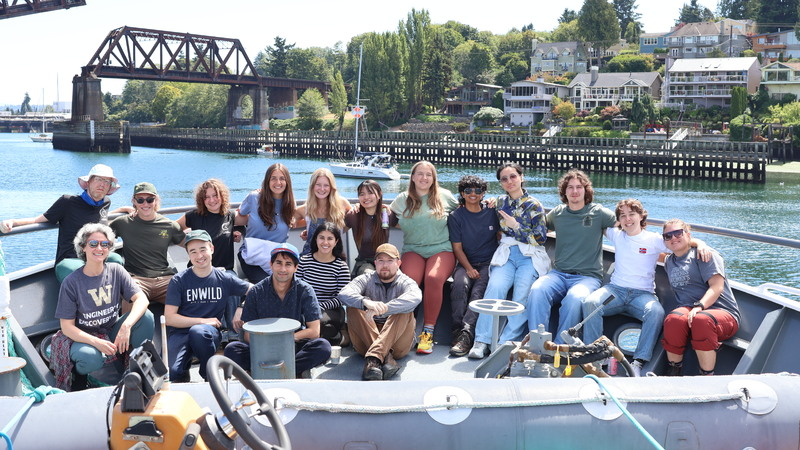
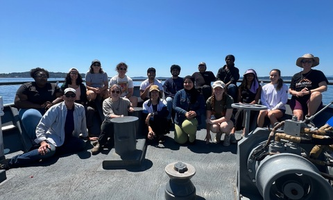

Each year of the project, COSZO hosts interns through its Research Experience for Undergraduates (REU) Program. Students participate through the UW Applied Physics Laboratory Summer Undergraduate Research Program and join the annual UW School of Oceanography VISIONS Expedition.
2025 Program

| Student | Project | Mentor(s) |
|---|---|---|
| Liv Dentoni | Laboratory Evaluations of an A-0-A Calibrated Pressure Instrument for the Cascadia Offshore Subduction Zone Observatory | William Wilcock, Dana Manalang |
| Lydia Kelley | Investigating Occurrences of Tectonic Tremor using Ocean Bottom Seismometers | Marine Denolle |
| Nik Patel | The Soundscape at the Washington Coast | Barry Ma |
2024 Program

| Student | Project | Mentor(s) |
|---|---|---|
| Elena S. Calderón-Aceituno | Investigation of Tectonic Shifts Using Seafloor Pressure Data | David A. Schmidt |
| Chloe Buford | Hidden Hiccups: Understanding Bad Calibrations in a Self-Calibrating A-0-A Pressure Gauge | William Wilcock, Dana Manalang |
| Usman Choudhary | Under Pressure: Tracking Volcanic Movements at Axial Seamount | William Wilcock, Maleen Wijeratna |
| Jose Cornejo | Analyzing the Influence of Chemosynthetic and Photosynthetic Productivity on Benthic Megafauna Abundance at Southern Hydrate Ridge | Deborah Kelley, Katie Bigham |
Questions
For questions about the REU program, please contact the COSZO team.